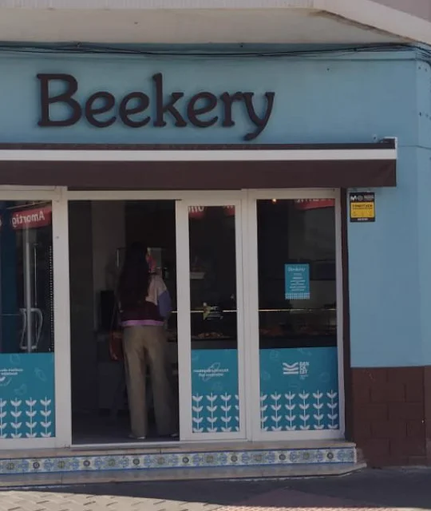
El de siempre
Avenida de Gandia
Mar–Vie 8–19 · Sáb–Dom 9–14
Av. de Gandia, 25 · 03700 Dénia
| Martes a viernes | 8:00 – 19:00 |
|---|---|
| Sábado y domingo | 9:00 – 14:00 |
| Lunes | Cerrado |
Av. de Gandia, 25 · Ptda. Madrigueres Sud, 26
722 34 89 41
Pan de masa madre en Dénia, desde 2019
Trigo antiguo de la Marina Alta, fermentaciones largas y un pan distinto cada día. Ahora, en dos obradores.
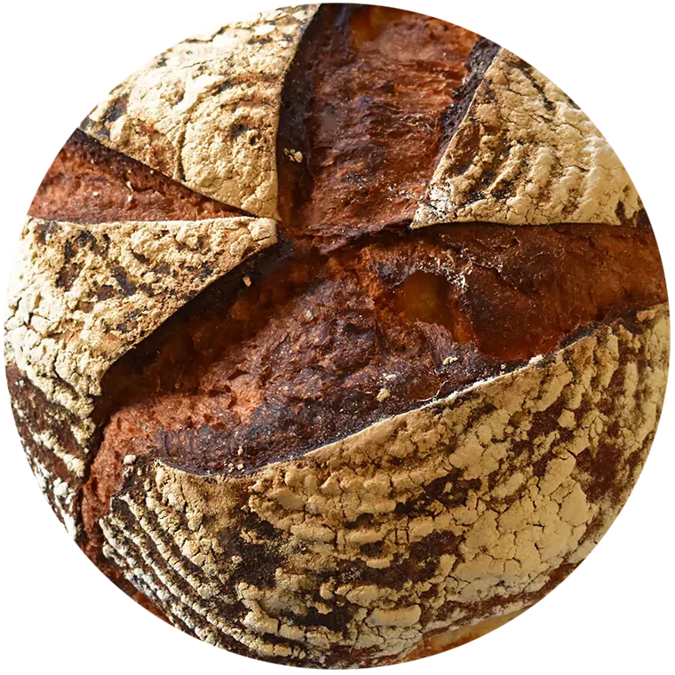
Cada pan tiene su día. Algunos solo salen del horno una vez por semana, y el de cada día se acaba.
Y todos los días: barras y hogazas de trigo blanco e integral 100%.
Guárdame uno por WhatsAppHoy sale del horno
Martes
Todo el pan se hace con nuestra masa madre. Del pan de cada día a las cocas de la Marina, la bollería de mantequilla y las tartas de celebración.
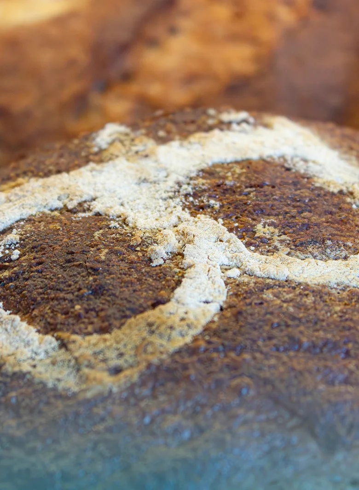
Pan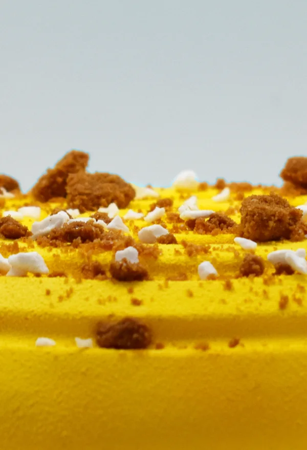
Semifríos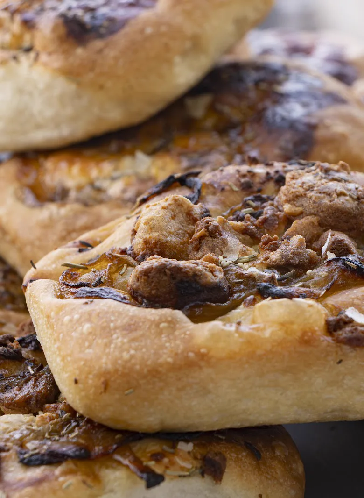
Cocas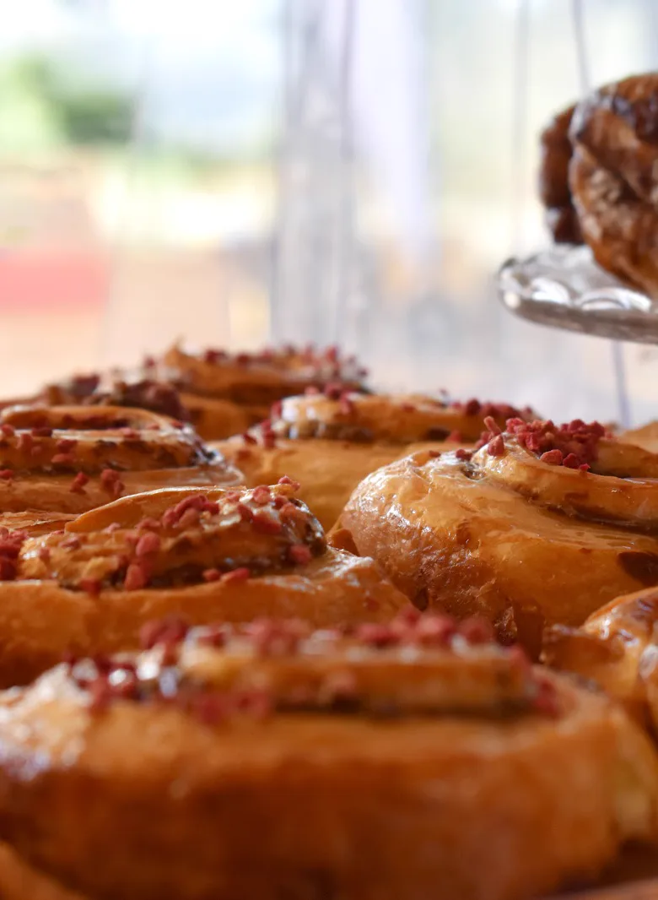
Bollería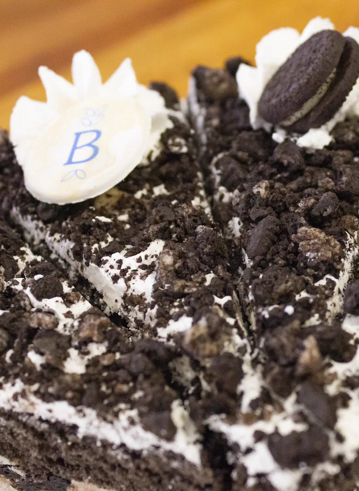
Tartas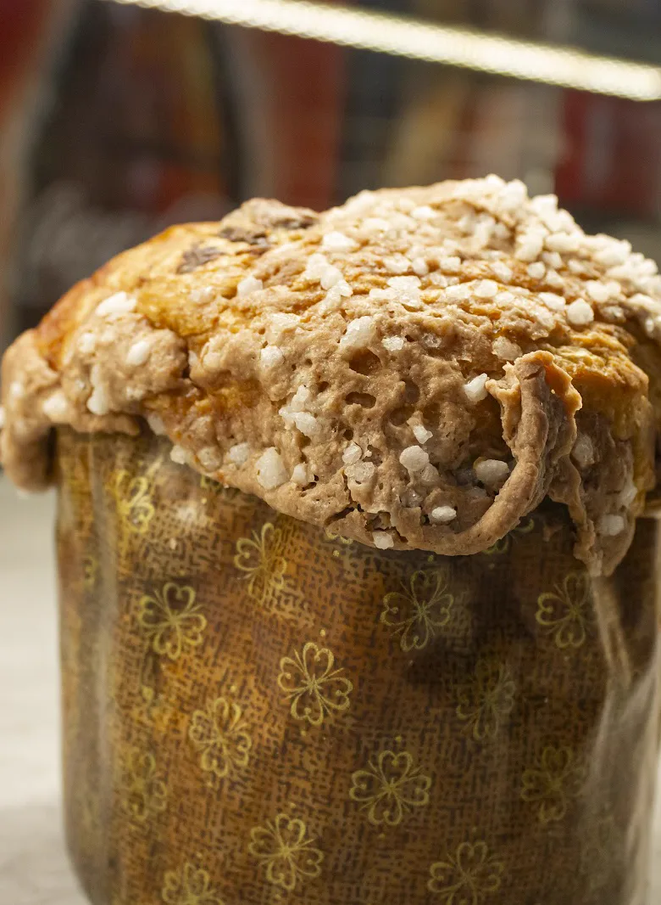
TemporadaHarinas que se notan y fermentaciones largas. Algunos panes solo salen ciertos días: mira el pan de hoy.
También hay pan y bollería sin gluten: pregúntanos qué tenemos hoy.
Pastelería fresca de vitrina. Tres de ellos, 100% vegetales.
La coca de la Marina de toda la vida, con masa de obrador.
Hojaldres hechos con mantequilla, rolls y empanadillas.
Enteras por encargo o al corte en vitrina. Encarga la tuya.
Al corte: almendra · queso · manzana
Lo que marca el calendario. Pregunta por fechas y encargos.
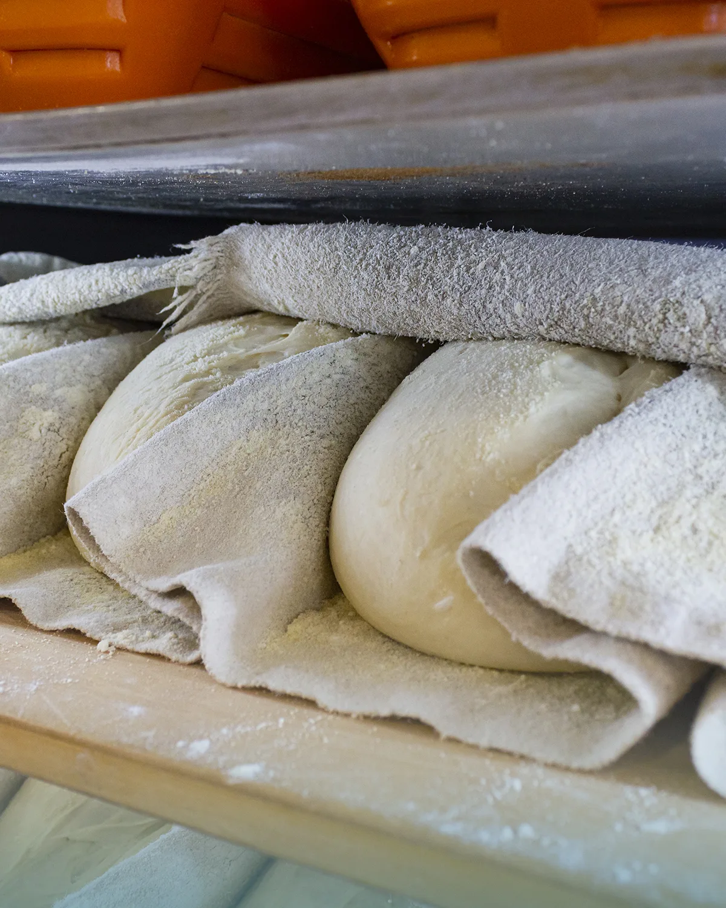
mientras Dénia duerme
La masa trabaja de noche. Masa madre, harinas de proximidad y tiempo: cada pieza se forma a mano y fermenta lo que necesita antes de entrar al horno.
 Harina
Harina Formado a mano
Formado a mano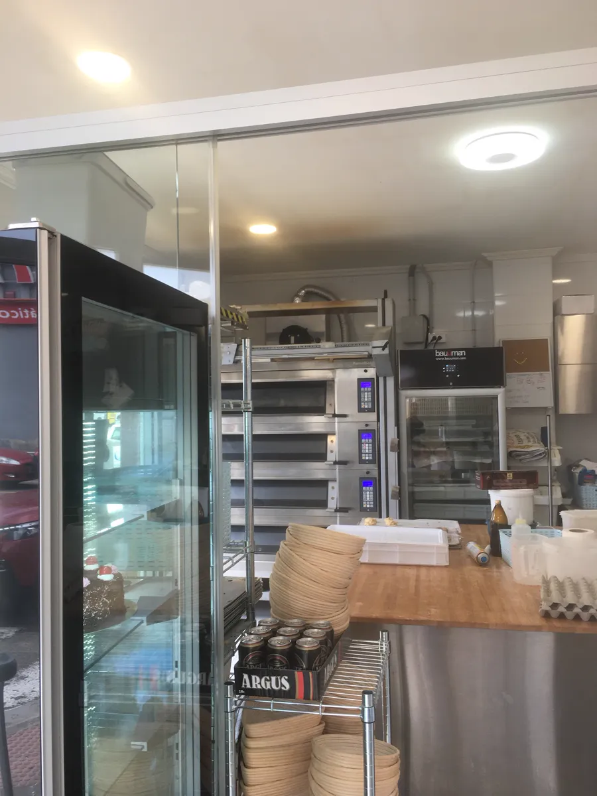
El obrador La miga
La migaPor eso el pan de Beekery sabe a algo.
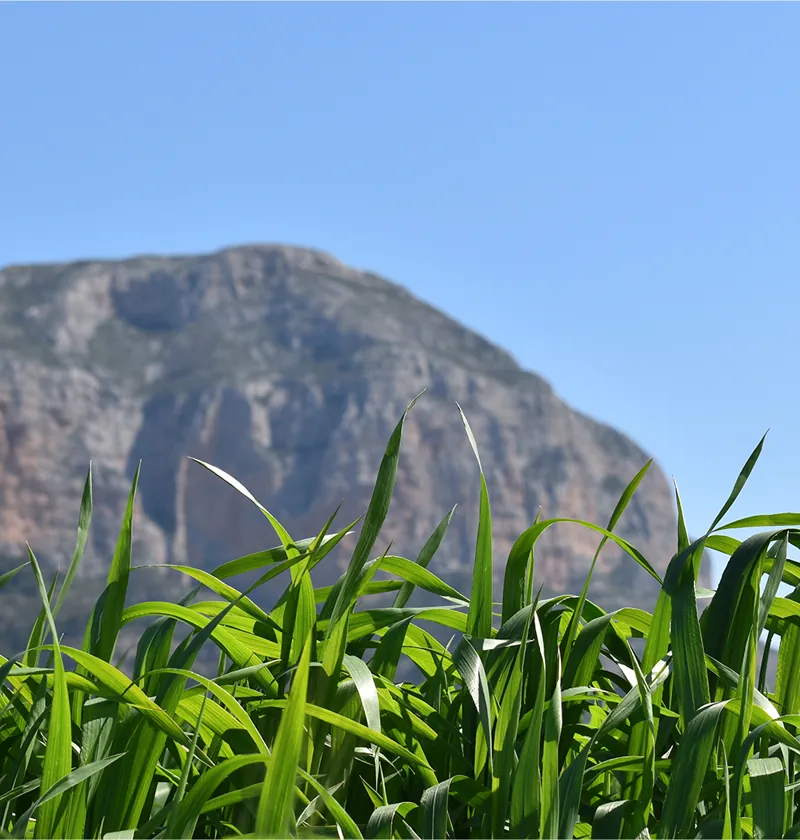
del campo al horno
«La importancia del trabajo diario y colectivo, desde la siembra hasta el horneado.»
Con el proyecto Blat de la Marina volvemos a cultivar y moler variedades antiguas de trigo de nuestra comarca: la cadena de siempre entre labradores, moledores y panaderos.

Raquel y Luis, los hermanos Van Beek
Beekery nace del sueño de dos hermanos enamorados de la panadería tradicional. Tras clasificarse para un mundial de panadería y ver su receta de Panou entrar en el Banco de Recetas de la UNESCO, la idea empezó a tomar forma.
Mientras Raquel trabajaba en algunas de las cocinas más prestigiosas del país, el proyecto se fue perfilando: una panadería que no entiende de prisas. En 2019 encendieron el horno de la Avenida de Gandia, y el 3 de noviembre de 2026 abrieron un segundo obrador en la Partida Madrigueres.
Por el camino recuperaron tradiciones como la Mocadorà de Sant Dionís, que este año cumple su séptima edición en Beekery y la segunda junto a Amunt contra el Cáncer.
«Llevo yendo a Beekery desde hace 6 años y no me canso de sus increíbles Roll de sabores, sus cocas, empanadillas y sus croissant.»
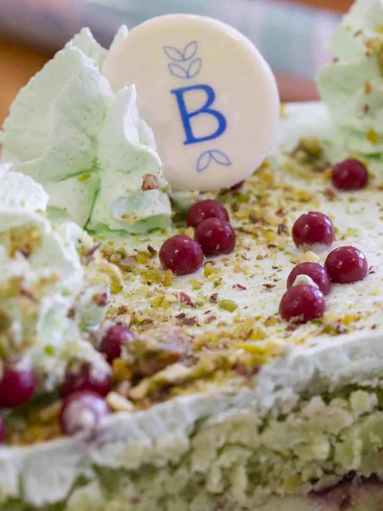
tu tarta, por encargo
Dinos qué te apetece y para cuándo. El mensaje se prepara solo y te confirmamos por WhatsApp.
Los dos en Dénia, a un paseo el uno del otro. Mira cuál está abierto y ven a por tu pan.

El de siempre
Mar–Vie 8–19 · Sáb–Dom 9–14
Av. de Gandia, 25 · 03700 Dénia
| Martes a viernes | 8:00 – 19:00 |
|---|---|
| Sábado y domingo | 9:00 – 14:00 |
| Lunes | Cerrado |
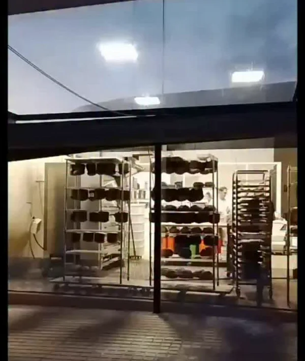
Detrás del San Carlos
Mar–Vie 8–16 · Sáb–Dom 9–14
Ptda. Madrigueres Sud, 26 · Local 8A · 03700 Dénia
| Martes a viernes | 8:00 – 16:00 |
|---|---|
| Sábado y domingo | 9:00 – 14:00 |
| Lunes | Cerrado |
¿Mejor en casa? También nos encuentras en Glovo. Y para encargos y dudas, escríbenos por WhatsApp.